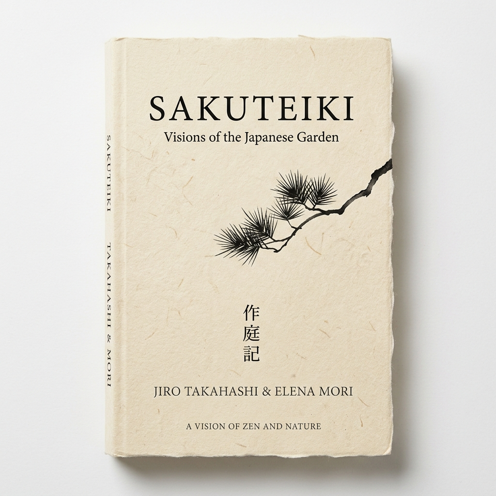
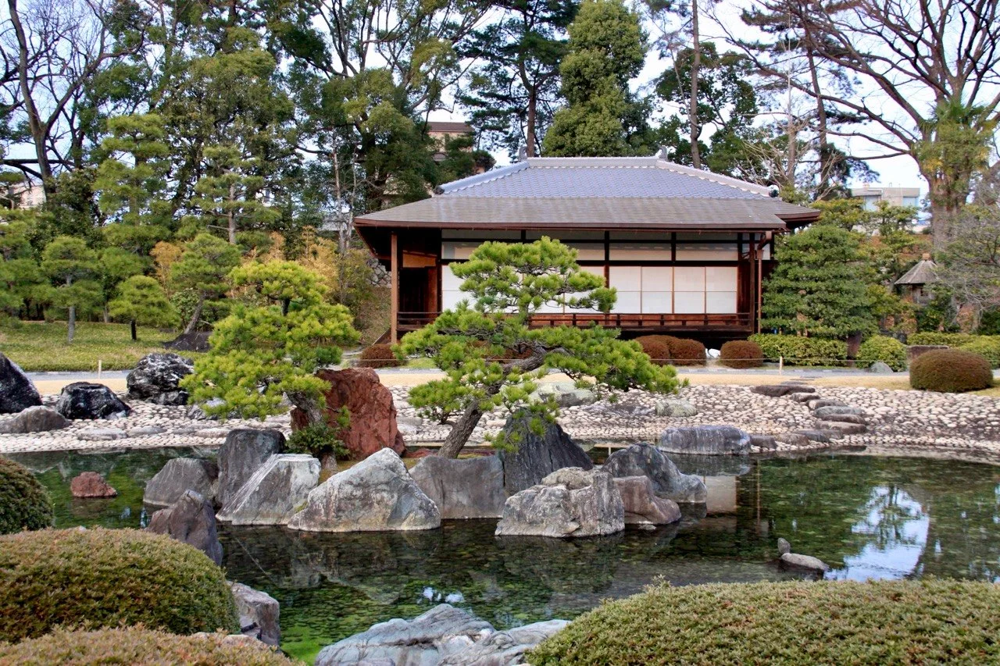
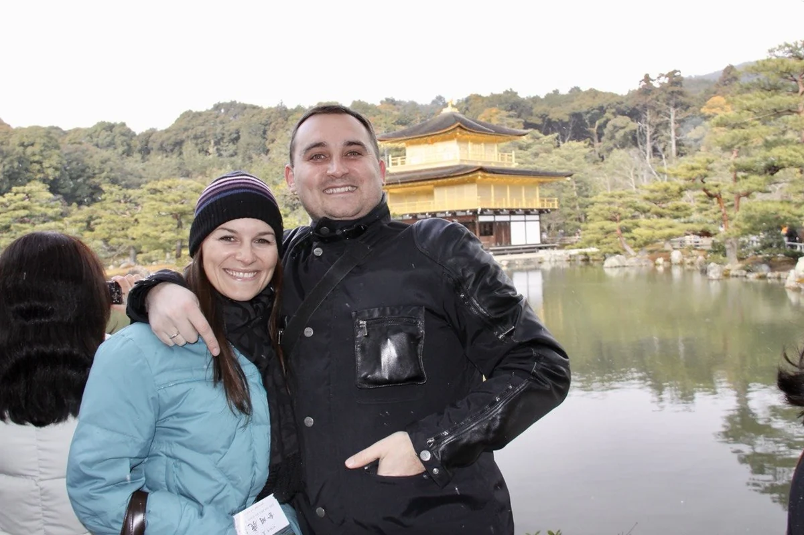
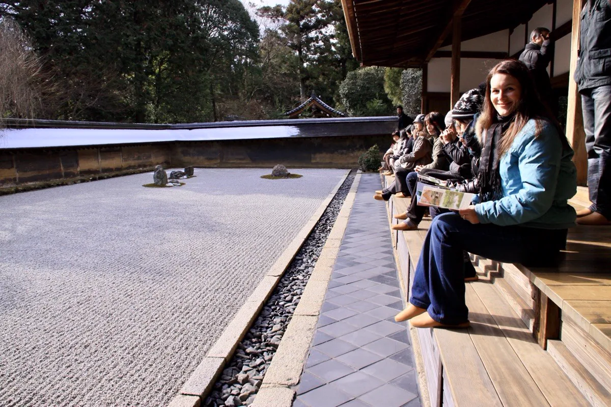
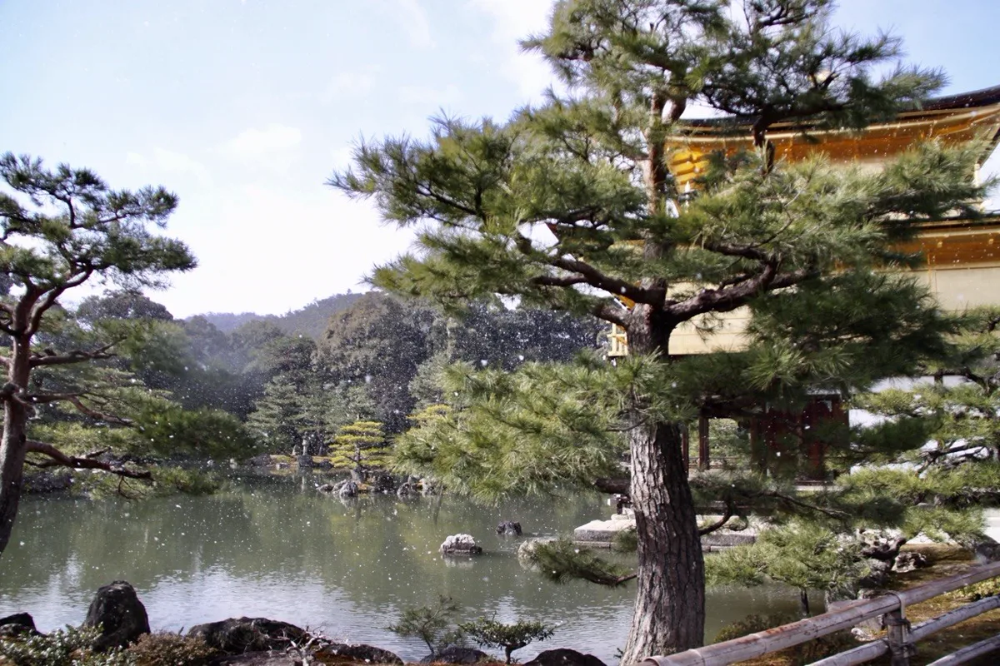
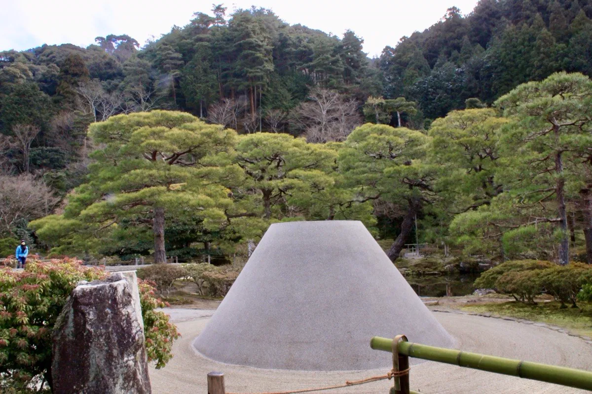
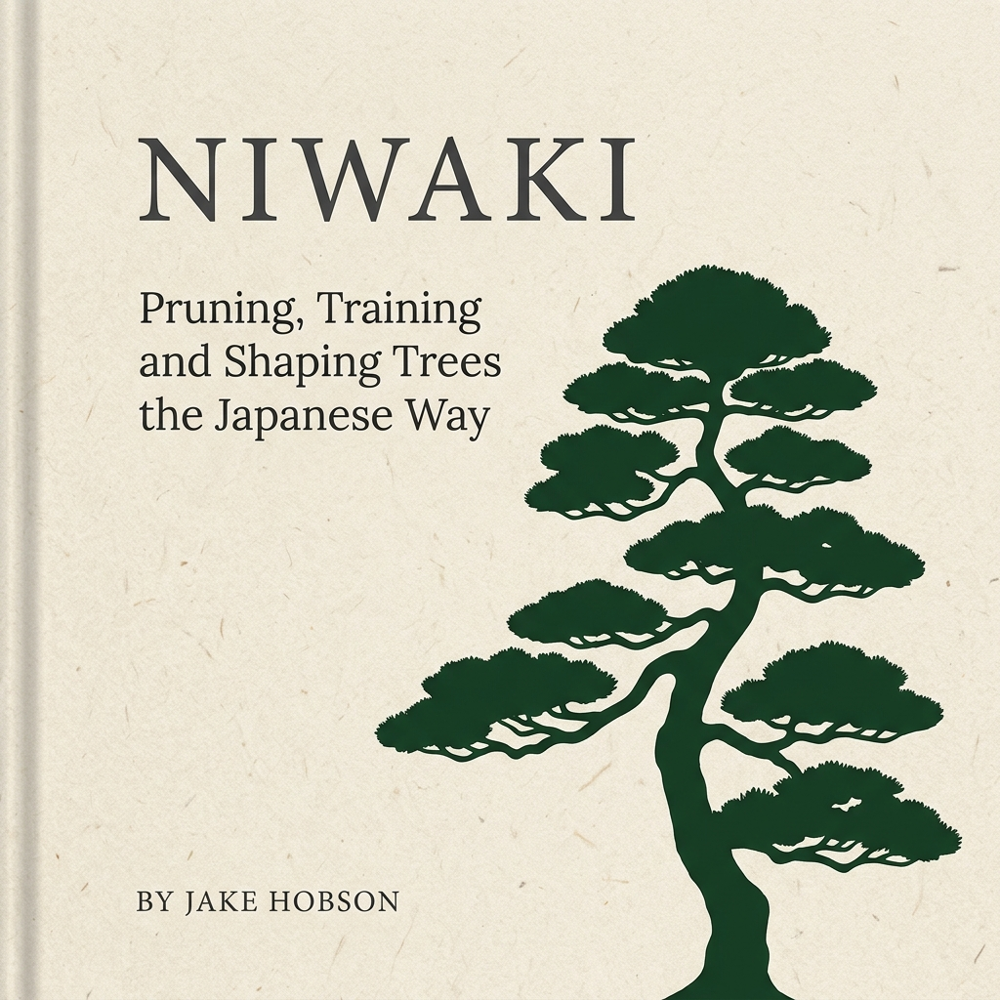
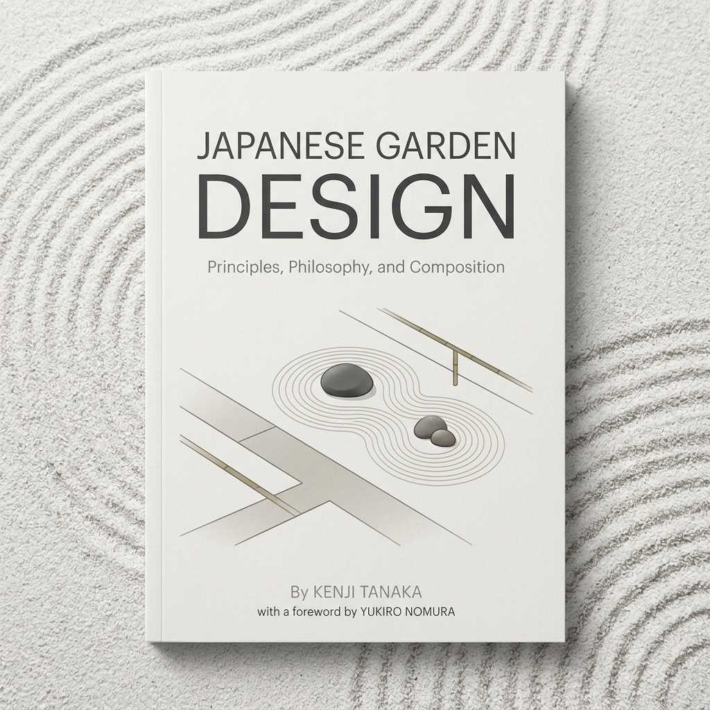
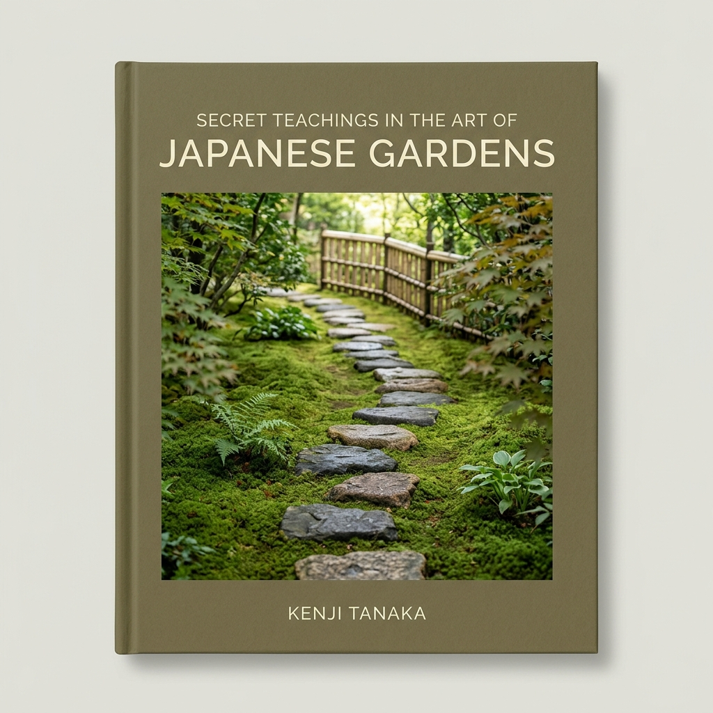
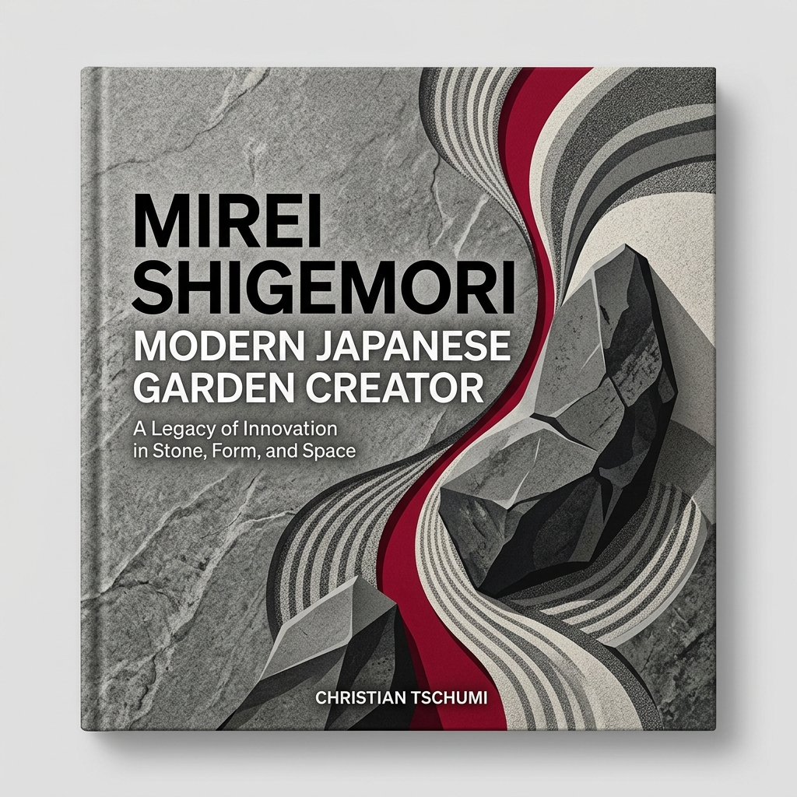

Source 01Sakuteiki
An old foundation of Japanese garden art: stone placement, sight lines, emptiness and rhythm. Not as a recipe, but as an attitude.
View on AmazonJapanese garden art is not decoration. It is craft, analysis and respect for natural laws.
Before my journey to Japan, I mostly cut trees: correct the shape, make them denser, keep them smaller. In Kyoto in 2009, I saw that Japanese tree care is something else - a master craft that treats the tree as a living being.
Since then, I am not interested in a quick cut. I read the tree, respect its reaction and work with it, not against it. Every cut is a decision for the next years.





I do not work from quick templates. These sources help me read form, emptiness, time and the energy of a tree more precisely.

Source 01An old foundation of Japanese garden art: stone placement, sight lines, emptiness and rhythm. Not as a recipe, but as an attitude.
View on Amazon
Source 02A clear book about form, pruning and tree character. It matters because it shows that niwaki is not a hedge, but a tree with line.
View on Amazon
Source 03It helps to see a garden not as a collection of plants, but as a space built from proportion, path, view and calm.
View on AmazonStones teach weight and restraint. The same logic matters in tree work: do not show everything, leave the right things standing.
View on Amazon
Source 05Useful for understanding nature image, asymmetry and guided attention in the Japanese garden.
View on Amazon
Source 06A reminder that tradition is not standstill. Good form respects origin and still stays alive.
View on AmazonThis is not an academic library. It shows the way of thinking behind my work.

A tree is not a green mass. It is a living system of crown, trunk, roots, light, water and time. If every bud is cut by a fixed pattern, the result cannot stay strong against nature.
My standard is simple: you should be satisfied not only directly after the work, but also after one, two and three years. The form has to stay honest.
As with the foundation of a house, everything starts below ground. The right soil, the right acidity and the right water-air balance are the base of health.
I do not promise miracles above your head. I promise to work correctly and correct mistakes. Follow the recommendations, and the form can stay for years.

A hedge trimmer tears. Fibres remain, and the tree reacts as if many small branches were injured. With sharp Japanese topiary scissors I cut cleanly: less damage, faster recovery and full strength for the form.
Send three photos. I will assess which artistic tree shaping, crown-structure correction or care sequence fits your tree - no quick cuts and no false promises.